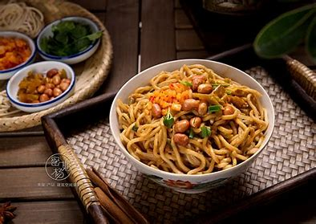
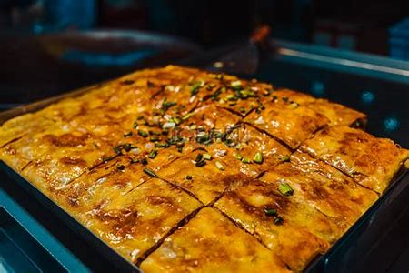
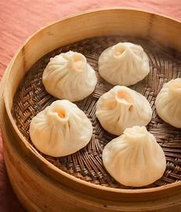
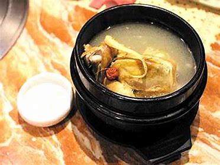

武汉的美食 返回主页
1.热干面

热干面源于三十年代初期，汉口长堤街卖汤面的蔡明伟。
蔡明伟是黄陂蔡榨人，他的汤面做得非常受欢迎，客人经常排队要等很长时间才能买到，很多客人等不及走掉了，蔡明伟做生意很会动脑筋。
为了加快出货量，通过反复试验，他终于摸索出一套“掸面”的工艺——就是先把面煮七八成熟，然后快速降温并均匀抹上油，这样卖面时，出货量就快了。
有一次蔡明伟在长堤街看到一家麻油作坊，看见他们从芝麻中提取麻油后，芝麻酱闲弃在一边，香气扑鼻，
他灵机一动；何不将芝麻酱加进面里试一下呢，于是蔡明伟向麻油作坊老板购买了些许芝麻酱回家。
同样经过多次反复试验，他觉得满意了，身边的人都说好吃，这时候他才信心满满推出他的新产品上街叫卖。
热干面——这个武汉人民最爱的小吃就这样诞生了。此时蔡明伟给这个面起了个名叫“麻酱面”，直到1950年工商登记时才正式叫“热干面”。
2.三鲜豆皮

三鲜豆皮是糯米和豆皮合作而成，以馅中有鲜肉、鲜蛋、鲜菇（鲜笋）而得名。三鲜豆皮形方而薄，色金而黄，味香而醉。
三鲜豆皮绝对不逊色于“汉堡包”和“披萨饼”。豆皮的“豆”必须是脱壳绿豆；豆皮的“皮”必须是精制米浆；豆皮的馅，必须是湘产糯米；
豆皮的形，必须是方而薄；豆皮的色，必须是金而黄；豆皮的味，必须是香而醉。难怪它一举夺得过中国饮食行业的最高荣誉“金鼎奖”。
3.四季美汤包

这种汤包具有皮薄、汤多、馅嫩、味鲜的武汉风味特色，有虾仁汤包、香菇汤包、蟹黄汤包、鸡茸汤包、什锦汤包等新品种，花样繁多，风味独特。
不仅为武汉人所喜爱，而且在全国也颇有名气。有经验食客的吃法为：先轻轻咬破汤包的表皮，慢慢吸尽里面的汤汁，然后再吃汤包的面皮和肉馅。
只有这样才能真正领略到小笼汤包的特有滋味。
4.小桃园煨汤

该店主要品种有瓦罐鸡汤、排骨汤、八封汤、甲鱼汤、牛肉汤、鸭汤等。以瓦罐鸡汤最有名，其原料为黄陂一带一斤半重以上的肥嫩母鸡，
剁成鸡块，先入油锅爆炒，再倒入内有沸水的瓦罐内，用旺火煨熟，小火煨透，汤鲜肉烂，原汁原味，营养丰富，是滋补上品。
这里的老厨师搜集民间煨汤技术的精华，再加以汇总，改进和提高。这样，这里煨的汤质馨甜鲜美，别具一格。